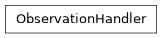

ObservationHandler#
Module: iqm.cpc.core.observation.observation_handler
- class iqm.cpc.core.observation.observation_handler.ObservationHandler(observation_parameters, dut_label, default_storage, load_rules=None, rule_cache=None)#
Bases:
objectBase class for loading observations from the DB or another source.
The load_rules of for a given set of observations can be set and the observations loaded accordingly.
- Parameters:
observation_parameters (Iterable[Parameter | str]) – list of observation names or parameters.
dut_label (str) – The label of the DUT for which this ObservationHandler is associated with.
default_storage (StorageInterface | None) – The default storage to be used for loading observations when the load rules do not specify a storage.
load_rules (Sequence[RuleType] | None) – The loading rules to be set for the above
observation_parameters.rule_cache (RuleCache | None) – optional user inputted custom rule cache.
- load_rules#
The load rules for each observation.
- loaded_observations#
The loaded observation and the load rule that produced it mapped to the observation
dut_field.
Methods
Adds observations, load rules for them and optionally loads them.
Change all the non-empty load rules into the provided rules.
Returns the rule names mapped to all their attributes (e.g. the tags) for caching of cacheable load rules.
Get the loaded observation value for a given observation path.
Load the observations for the given components based on their loading rules.
Set up the handler's loading from a settings tree.
Prints the observations and the load rule that produces them.
Set given load rule to specific observations.
Return loaded observation values mapped to the respective dut_fields.
- set_load_rules(load_rules, matches=None, starts_with=None, includes=None)#
Set given load rule to specific observations.
- Parameters:
matches (list[str] | None) – Apply function to only the observations whose names that match one of the strings exactly. Does not support regex.
starts_with (list[str] | None) – Apply to only the observations whose names start with one of these strings. Supports regex.
includes (list[str] | None) – Apply to only the observations whose names contain one of the given strings. Supports regex.
- Return type:
None
- change_load_rules(load_rules)#
Change all the non-empty load rules into the provided rules.
- load_observations(matches=None, starts_with=None, includes=None, load_rule_cache=True)#
Load the observations for the given components based on their loading rules.
In case a list of component names is not provided, load observations for all components. Allows preloading the observation into the rule cache for certain load rules in order improve the performance.
- Parameters:
matches (list[str] | None) – Apply function to only the observations whose names match one of these strings exactly. Does not support regex.
starts_with (list[str] | None) – Apply to only the observations whose names start with one of these strings. Supports regex.
includes (list[str] | None) – Apply to only the observations whose names contain one of the given strings. Supports regex.
load_rule_cache (bool) – Iff True, preload observations into the cache.
- Return type:
None
- print_observations(matches=None, starts_with=None, includes=None)#
Prints the observations and the load rule that produces them.
- Parameters:
matches (list[str] | None) – Apply function to only the observations whose names that match one of these strings exactly. Does not support regex.
starts_with (list[str] | None) – Apply to only the observations whose names start with one of these strings. Supports regex.
includes (list[str] | None) – Apply to only the observations whose names contain one of the given strings. Supports regex.
- Return type:
None
- add_observations(observation_parameters, load_rules=None, load=False)#
Adds observations, load rules for them and optionally loads them.
- Parameters:
observation_parameters (Iterable[str | Parameter]) – The observation dut_fields or Parameters to be added to.
load_rules (Sequence[RuleType] | None) – Sets the given load rules for the aforementioned paths/dut_fields. The global default rules will be used if left
None.load (bool) – If set
Truewill load the newly added observations using the specifiedload_rules. Note: for cached load rules, assumes the cache is loaded before this call and will not reload it.
- Return type:
None
- populate_from(settings, load_rules=None, override_rules=False)#
Set up the handler’s loading from a settings tree.
Will add all the settings tree paths to be loaded.
- Parameters:
settings (SettingNode) – The settings tree from which to read the paths.
load_rules (Sequence[RuleType] | None) – Sets the given load rules for the aforementioned paths/dut_fields. The global default rules will be used if left
None.override_rules (bool) – If
True, will override any already existing rules with the givenload_rules.
- Return type:
None
- get_value(name, load=False, load_rules=None)#
Get the loaded observation value for a given observation path.
If the specified observation is not yet found in
self, it can optionally be loaded first and then returned.- Parameters:
name (str) – Observation path.
load (bool) – Whether to try to add & load the observation if no value is found. Note: for cached load rules, assumes the rule cache has been loaded before this call and will not reload it.
load_rules (Sequence[RuleType] | None) – Load rules to add for the observation named
namein case it was not yet found inself. If not given, the global default rules are used. Has no effect ifload == False.
- Returns:
The observation value or
Noneif the observation was not found inself.- Return type:
- value_dict(matches=None, starts_with=None, includes=None, return_full_observation=False)#
Return loaded observation values mapped to the respective dut_fields.
- Parameters:
matches (list[str] | None) – Apply function to only the observations whose names that match one of these strings exactly. Does not support regex.
starts_with (list[str] | None) – Apply to only the observations whose names start with one of these strings. Supports regex.
includes (list[str] | None) – Apply to only the observations whose names contain one of the given strings. Supports regex.
return_full_observation (bool) – Return the full observations in the dict instead of just the observation values.
- Returns:
- A dictionary mapping the loaded values to the respective dut_fields.
Nonevalues are skipped and not found in the dict.
- A dictionary mapping the loaded values to the respective dut_fields.
- Return type:
- get_rule_names_and_attributes(matches=None, starts_with=None, includes=None)#
Returns the rule names mapped to all their attributes (e.g. the tags) for caching of cacheable load rules.
- Parameters:
matches (list[str] | None) – Apply function to only the observations whose names that match one of these strings exactly. Does not support regex.
starts_with (list[str] | None) – Apply to only the observations whose names start with one of these strings. Supports regex.
includes (list[str] | None) – Apply to only the observations whose names contain one of the given strings. Supports regex.
- Returns:
Mapping from CacheableLoadRule subclass names to the rule attributes of all the rules of the same type.
- Return type:
Inheritance
